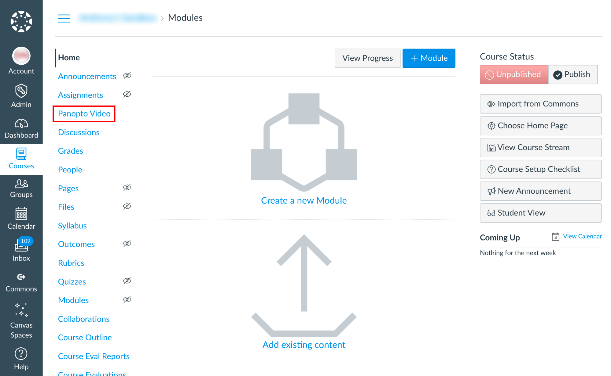

Introduction to Panopto Video
Panopto can be used as a video capturing, editing, hosting & streaming platform. Due to privacy constraints, SFU Canvas integration with Panopto is restricted to access to Panopto tools through the left side navigation in your Canvas course.
After recording/uploading a video in Panopto, students can view the videos directly in Panopto Video in your Canvas course. Panopto also allows students to create & submit videos as an assignment.
How to Record, Edit, and manage videos in Panopto
A tutorial on how to capture and edit videos in panopto organized for SFU Beedie
Staff & Faculty is available here: 2021.02.01 training recording.
How to insert another video in your video lecture, or update a single slide:
How to Use Add a Clip to Splice Multiple Sessions Together
Another way of combining multiple videos into one is to add multiple primary
streams. More info on: How to Edit and Add Streams in the Editor
[Combining multiple sessions: How to Merge Videos *not tested]